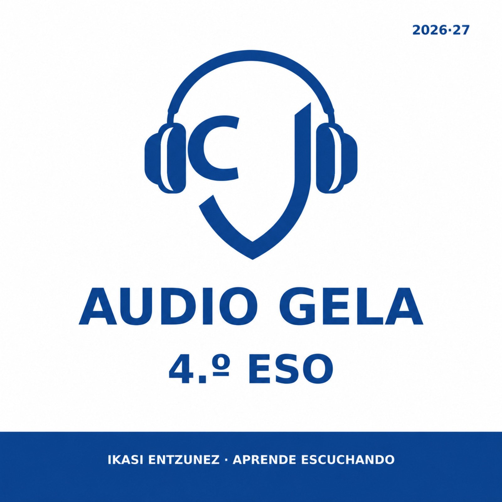

← Volver al portalAUDIO
Podcast educativo · Curso 2026/27
AUDIO
GELA
Escucha, repasa y practica Historia de 4.º ESO. El Tema 1 constituye el piloto que fijará la estructura del resto de la unidad.
Asignaturas
Selecciona el tema que quieras estudiar.
HHistoriaUnidad 1 · Revolución Industrial1 tema disponible
CASTCastellano1 episodio disponible
Unidad 1 · La Revolución IndustrialTema 1 disponible
T01Las revoluciones que impulsaron la industrializaciónDemografía, agricultura, mentalidad y ventajas británicas.10:11
Por qué la industrialización comenzó en Gran Bretaña y cómo varias transformaciones simultáneas se reforzaron entre sí.
Autoevaluación interactivaAutoevaluación imprimibleCinco niveles · 20 preguntas por nivel · rotación 10+10 · ficha combinada de 25 actividades.
EUSEuskaraPrestaketan
Euskarazko bertsioa hurrengo fasean.
Gaztelaniazko T01 baliozkotu ondoren prestatuko dira audioa eta autoebaluazioak.
Gaztelaniazko T01 baliozkotu ondoren prestatuko dira audioa eta autoebaluazioak.
🎧 Añadir el podcast de Historia de 4.º ESO
En Apple Podcasts, utiliza «Seguir un programa por URL» y pega:
https://xtronzio.github.io/audiogela-4eso-2026-27/feed.xml